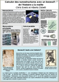

|
nano2hybrids : A new way to communicate nanoscience (1.35MB)
A poster produced for a meeting in Brussels on nanoscience in Europe (October 2006). It describes a new project we are commencing
studying metal-nanotube hybrid systems, focussing on the novel science communication aspects of the project rather than the science
itself.
|
|
Computational Materials Modelling (320KB)
Introductory poster produced for the 2006 CNRS evaluation of our laboratory by myself and Arezki Mokrani, describing the computer modelling work
performed by our group, "Physics of Materials and Nanostructures", within the Institute of Materials at Nantes.
|
|
Defects in carbon nanosystems (1.58MB)
A general scientific poster for a day on "nanoscience in Brittany" at Rennes in 2006,
covering briefly various nanoscience projects I am working on.
|
|  |
High performance computing for nanoscience (in French, 245KB)
A general introduction poster from the "Journée Techno" at the LPS in Orsay (2004), describing the kind of nanoscience problems we tackle with computer modelling,
the sort of computers we use, and a bit of historical background about Beowulf.
|
|
Does nitrogen violate the isolated pentagon rule? (208KB)
A science poster from the NT05 nanotube conference (2005), describing work on nitrogen impurities in fullerenes, new azafullerene molecules,
and the way in which nitrogen can stabilise pentagon pairs in sp2 carbon networks.
|
|
Fluorination of carbon nanotubes (195KB)
Also from NT05, a poster on our work on fluorination of carbon nanotubes.
|